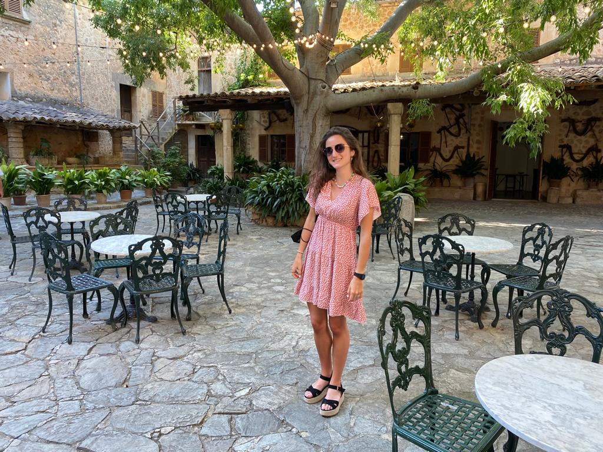

About me: Paula Iglesias Bengoa

Descripción personal
Estudiante de Comunicación y título propio de Tecnologías de la Comunicación audiovisual y Multimedia de la Universidad de Deusto
Estudios realizados
Gustos y aficiones
Gusto por la lectura y la música. Practico deporte Fitboxing y gimnasio.
Experiencia laboral
No he comenzado a trabajar aún pero he realizado bastantes voluntariados
Voluntaria en la competición de atletismo celebrada en el Velodromo de Anoeta en el año 2019
Ayudante en los puestos de avituallamiento
Personal de tráfico en los accesos a las calles de la carrera
Voluntaria numerosos años en puestos de recogida de alimentos para las campañas de Navidad